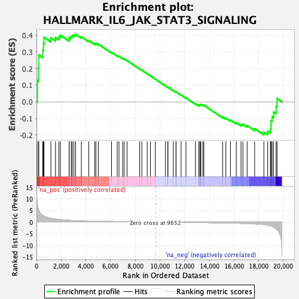

| | | Dataset | Test%20LTED%20wt |
| Phenotype | NoPhenotypeAvailable |
| Upregulated in class | na_pos |
| GeneSet | HALLMARK_IL6_JAK_STAT3_SIGNALING |
| Enrichment Score (ES) | 0.40576136 |
| Normalized Enrichment Score (NES) | 1.1614604 |
| Nominal p-value | 0.21851853 |
| FDR q-value | 0.6374512 |
| FWER p-Value | 0.997 |
Table: GSEA Results Summary

Fig 1: Enrichment plot: HALLMARK_IL6_JAK_STAT3_SIGNALING
Profile of the Running ES Score & Positions of GeneSet Members on the Rank Ordered List
| SYMBOL | RANK IN GENE LIST | RANK METRIC SCORE | RUNNING ES | CORE ENRICHMENT | | 1 | IL1R1 | 50 | 8.506 | 0.1279 | Yes |
| 2 | CSF2RB | 166 | 5.348 | 0.2042 | Yes |
| 3 | IL1R2 | 188 | 5.119 | 0.2816 | Yes |
| 4 | CCR1 | 511 | 2.912 | 0.3100 | Yes |
| 5 | CNTFR | 559 | 2.756 | 0.3499 | Yes |
| 6 | INHBE | 608 | 2.644 | 0.3880 | Yes |
| 7 | SOCS3 | 1167 | 1.642 | 0.3851 | Yes |
| 8 | TNFRSF12A | 1542 | 1.312 | 0.3863 | Yes |
| 9 | CSF3R | 1818 | 1.130 | 0.3898 | Yes |
| 10 | PDGFC | 1936 | 1.072 | 0.4003 | Yes |
| 11 | IL13RA1 | 2644 | 0.797 | 0.3769 | Yes |
| 12 | CD44 | 2646 | 0.797 | 0.3890 | Yes |
| 13 | IL3RA | 2820 | 0.740 | 0.3917 | Yes |
| 14 | CXCL13 | 2899 | 0.719 | 0.3987 | Yes |
| 15 | LEPR | 3033 | 0.685 | 0.4025 | Yes |
| 16 | PIK3R5 | 3169 | 0.655 | 0.4058 | Yes |
| 17 | TNFRSF21 | 3636 | 0.562 | 0.3909 | No |
| 18 | LTB | 4235 | 0.466 | 0.3678 | No |
| 19 | IL7 | 4716 | 0.403 | 0.3498 | No |
| 20 | BAK1 | 4813 | 0.394 | 0.3510 | No |
| 21 | IFNGR1 | 5009 | 0.370 | 0.3468 | No |
| 22 | MAP3K8 | 6080 | 0.259 | 0.2968 | No |
| 23 | IL6ST | 6540 | 0.221 | 0.2770 | No |
| 24 | PTPN11 | 6683 | 0.210 | 0.2731 | No |
| 25 | HMOX1 | 6977 | 0.186 | 0.2612 | No |
| 26 | TYK2 | 7104 | 0.176 | 0.2575 | No |
| 27 | CD14 | 7336 | 0.157 | 0.2483 | No |
| 28 | JUN | 8359 | 0.084 | 0.1980 | No |
| 29 | LTBR | 8531 | 0.072 | 0.1905 | No |
| 30 | PTPN2 | 8969 | 0.046 | 0.1691 | No |
| 31 | MYD88 | 9229 | 0.028 | 0.1565 | No |
| 32 | IL4R | 9628 | 0.002 | 0.1364 | No |
| 33 | STAM2 | 10446 | -0.051 | 0.0960 | No |
| 34 | IL17RA | 10641 | -0.063 | 0.0871 | No |
| 35 | TGFB1 | 10644 | -0.063 | 0.0880 | No |
| 36 | CD9 | 11090 | -0.091 | 0.0670 | No |
| 37 | STAT2 | 11301 | -0.105 | 0.0580 | No |
| 38 | SOCS1 | 11305 | -0.106 | 0.0595 | No |
| 39 | STAT3 | 11715 | -0.131 | 0.0408 | No |
| 40 | PIM1 | 12108 | -0.159 | 0.0235 | No |
| 41 | GRB2 | 12877 | -0.209 | -0.0121 | No |
| 42 | CSF1 | 13150 | -0.229 | -0.0223 | No |
| 43 | IFNAR1 | 13155 | -0.230 | -0.0190 | No |
| 44 | IL10RB | 13244 | -0.236 | -0.0198 | No |
| 45 | IFNGR2 | 13264 | -0.237 | -0.0171 | No |
| 46 | ACVR1B | 13313 | -0.241 | -0.0158 | No |
| 47 | PTPN1 | 13476 | -0.254 | -0.0201 | No |
| 48 | HAX1 | 13555 | -0.259 | -0.0201 | No |
| 49 | TNF | 15081 | -0.384 | -0.0911 | No |
| 50 | TNFRSF1A | 15342 | -0.411 | -0.0979 | No |
| 51 | IRF1 | 15712 | -0.451 | -0.1096 | No |
| 52 | CBL | 16184 | -0.506 | -0.1256 | No |
| 53 | TLR2 | 16569 | -0.557 | -0.1365 | No |
| 54 | FAS | 16718 | -0.578 | -0.1351 | No |
| 55 | REG1A | 17064 | -0.640 | -0.1427 | No |
| 56 | IL18R1 | 17672 | -0.786 | -0.1613 | No |
| 57 | OSMR | 18419 | -1.102 | -0.1820 | No |
| 58 | IRF9 | 18728 | -1.345 | -0.1769 | No |
| 59 | IL17RB | 18949 | -1.636 | -0.1629 | No |
| 60 | STAT1 | 18998 | -1.708 | -0.1391 | No |
| 61 | IL15RA | 19001 | -1.710 | -0.1130 | No |
| 62 | CSF2RA | 19093 | -1.873 | -0.0889 | No |
| 63 | CD36 | 19207 | -2.173 | -0.0613 | No |
| 64 | A2M | 19412 | -2.946 | -0.0264 | No |
| 65 | ITGA4 | 19484 | -3.262 | 0.0201 | No |
Table: GSEA details [plain text format]
Fig 2: HALLMARK_IL6_JAK_STAT3_SIGNALING: Random ES distribution
Gene set null distribution of ES for HALLMARK_IL6_JAK_STAT3_SIGNALING